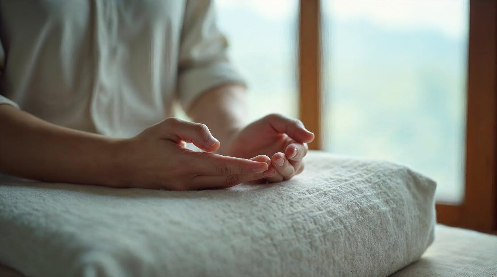
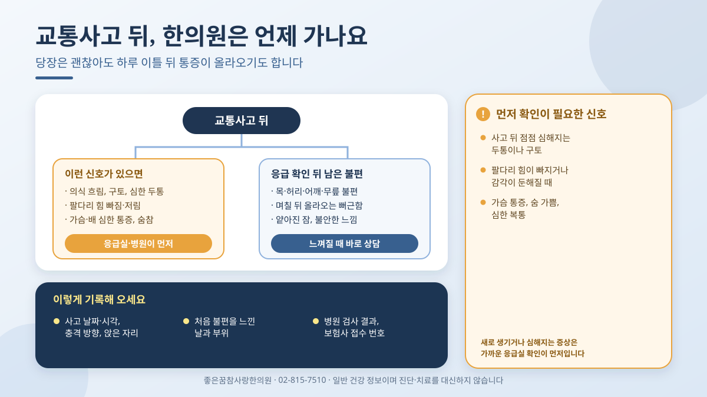

이종호 한의사 감수좋은꿈참사랑한의원 대표원장 (한의사 면허번호 19769)발행 2026-11-23 · 수정 2026-11-26
이 글의 차례
- 왜 이런 불편이 생길 수 있나요
- 왜 하루 이틀 지나서 더 아플까요
- 조수석이나 뒷좌석에 타고 있었다면
- 아이나 어르신이 함께 사고를 겪었다면
- 사고 직후에는 무엇부터 확인하나요?
- 한의원에서 상담하는 시기
- 사고 뒤 시기별로 무엇을 살피면 좋을까요?
- 사고 뒤 집에서는 어떻게 지내면 좋을까요?
- 사고 뒤 출근과 일은 어떻게 하면 좋을까요?
- 운전은 언제부터 다시 해도 될까요?
- 한의원에서 함께 살필 수 있는 경우
- 진료실에서는 무엇을 여쭙나요?
- 병원 치료를 받으면서 한의원에도 다녀도 될까요?
- 사고 뒤 불편은 얼마나 지켜보면 될까요?
- 사고 뒤 잠과 마음이 흔들린다면
- 사고 뒤 이런 변화가 있는지 점검해 보세요
- 보험과 서류는 어떻게 챙길까요?
- 처음 진료받는 날은 무엇을 챙겨 오면 좋을까요?
- 이렇게 기록해 오시면 상담이 쉬워집니다
- 이런 증상은 먼저 확인이 필요합니다
교통사고 뒤 응급 증상이 없다면 남은 불편이 느껴질 때 바로 상담할 수 있고, 응급 증상이 있다면 가까운 응급실이 먼저입니다. 교통사고는 당장은 괜찮다고 느껴도 하루 이틀 뒤 통증이 올라오는 경우가 많습니다. 언제 어디로 가야 할지 정리합니다.
신호를 기다리는데 뒤에서 '쿵' 하는 소리와 함께 몸이 앞으로 쏠립니다. 놀란 마음에 차에서 내려 상대 운전자와 이야기를 나누고, 보험사에 연락하고 나니 정신이 없지요. 그날은 별로 아프지 않아 그냥 넘어갔는데, 다음 날 아침 고개가 돌아가지 않아 깜짝 놀라십니다.
이런 일은 생각보다 흔합니다. 사고 순간에는 놀람과 긴장이 통증을 가리기 때문입니다. 그래서 "언제 가야 하나", "지금 가도 되나" 하는 질문이 생기지요. 이 글에는 사고 뒤 시기별로 무엇을 살피면 좋은지, 한의원에는 언제 오시면 좋은지, 그리고 무엇을 기록해 두면 좋은지를 차례로 적었습니다.
왜 이런 불편이 생길 수 있나요
- 사고 순간 몸이 갑자기 흔들리면 근육이 크게 긴장해, 하루 이틀 뒤 뻐근함과 통증이 올라오는 경우가 많습니다.
- 처음에는 놀람과 긴장 때문에 통증을 덜 느끼기도 합니다.
- 잠이 얕아지거나 운전이 불안한 것처럼 마음의 변화도 시간이 지나 드러날 수 있습니다.
- 사고 직후 진료를 미루면 나중에 생긴 불편이 사고와 이어진 것인지 설명하기 어려워질 수 있어 기록이 중요합니다.
왜 하루 이틀 지나서 더 아플까요
충돌하는 순간, 몸은 미처 준비하지 못한 채 앞뒤나 옆으로 크게 흔들립니다. 특히 목은 무거운 머리를 받치고 있어 그 흔들림을 고스란히 받지요. 이때 목과 어깨, 등과 허리의 근육과 인대가 갑자기 늘어났다 줄어들며 무리를 받습니다.
그런데 사고 직후에는 몸이 비상 상태가 되어 통증을 덜 느낍니다. 긴장이 풀리고 하룻밤 자고 나면 그제야 무리를 받은 곳이 뻣뻣하게 굳으면서 불편이 드러납니다. 그래서 "어제는 괜찮았는데 오늘 아침에 일어나니 목이 안 돌아간다"는 말씀을 많이 하십니다.
예를 들어 뒤에서 받힌 경우에는 목과 등 위쪽, 옆에서 받힌 경우에는 목 옆과 어깨, 허리 한쪽이 불편해지기 쉽습니다. 안전벨트가 지나간 자리인 가슴과 어깨, 골반 쪽이 뻐근한 분도 있습니다. 어느 방향으로 충격을 받았는지 기억해 두시면 진료에 도움이 됩니다.
사고 순간 고개를 어느 쪽으로 돌리고 있었는지, 핸들을 꽉 잡고 있었는지도 떠오르는 대로 적어 두세요. 같은 충격이라도 그 순간의 자세에 따라 불편한 자리가 달라질 수 있습니다.
조수석이나 뒷좌석에 타고 있었다면
운전하는 분은 앞을 보고 있어 순간적으로 몸에 힘을 주기도 하지만, 동승자는 휴대폰을 보거나 잠들어 있는 등 전혀 대비하지 못한 상태에서 충격을 받는 경우가 많습니다. 그래서 같은 사고라도 동승자의 불편이 더 크게 나타나기도 합니다.
뒷좌석에서 안전벨트를 하지 않았거나 허리띠만 매고 있었다면 상체가 크게 흔들려 목과 등, 허리에 무리가 가기 쉽습니다. 고개를 숙인 채 졸고 있었다면 목이 더 크게 젖혀졌을 수 있습니다. 당시 어떤 자세였는지 기억나는 만큼 말씀해 주세요.
아이나 어르신이 함께 사고를 겪었다면
아이는 어디가 아픈지 말로 잘 표현하지 못합니다. 사고 뒤 평소보다 잘 보채거나, 잠을 자주 깨거나, 밥을 덜 먹거나, 차에 타기를 무서워한다면 그 변화를 눈여겨보세요. 놀란 마음이 몸의 불편과 함께 드러나는 것일 수 있습니다.
어르신은 근육과 뼈가 약해져 있어 같은 충격에도 더 크게 다치실 수 있습니다. 괜찮다고 하셔도 병원에서 먼저 검사를 받아 보시도록 권해 드리세요. 그 뒤 남은 불편은 한의원에서 함께 살필 수 있습니다. 드시는 약이 많다면 약 봉투를 모두 챙겨 오세요.
사고 직후에는 무엇부터 확인하나요?
사고 직후에는 먼저 응급 확인이 필요한 상태인지부터 살펴야 합니다. 어떤 신호가 그런지는 이 글 아래 '이런 증상은 먼저 확인이 필요합니다'에 정리해 두었습니다. 그런 신호가 있다면 한의원을 기다리지 말고 가까운 응급실을 먼저 이용하세요.
그런 신호가 없더라도 머리를 부딪혔거나 사고가 컸다면, 병원에서 영상 검사를 먼저 받아 보시는 것이 마음 편합니다. 검사 결과가 있으면 한의원에서도 그것을 참고해 진료를 이어 갈 수 있습니다. 검사에서 큰 이상이 없다는 설명을 들었는데도 불편이 남는다면, 그때 편하게 상담받으러 오세요.

한의원에서 상담하는 시기
- 응급 확인 뒤 남은 목, 허리, 어깨, 무릎 불편
- 며칠이 지나고 나서 올라오는 뻐근함과 움직임의 불편
- 사고 뒤 잠이 얕아지거나 불안한 느낌
- 병원 치료를 받고 있지만 몸이 계속 무거운 경우
사고 뒤 시기별로 무엇을 살피면 좋을까요?
사고 당일에는 몸 상태를 차분히 살피고 기록을 시작하세요. 아픈 곳이 없더라도 사고 시각과 충격 방향, 앉아 있던 자리를 적어 두면 나중에 불편이 생겼을 때 도움이 됩니다. 당일은 무리하게 운동하거나 술을 마시지 말고 따뜻하게 씻은 뒤 일찍 쉬세요.
다음 날부터 사흘 사이에는 뻐근함이 올라오는지 살펴보세요. 아침에 일어날 때, 고개를 돌릴 때, 허리를 숙일 때 어떤지 한 줄씩 적어 두시면 됩니다. 이 시기에 불편이 생기면 미루지 말고 상담받아 보세요.
일주일이 지나서도 불편이 줄지 않거나 오히려 다른 곳으로 번진다면, 그 변화를 기록해 진료 때 알려 주세요. 잠이 얕아지거나, 운전석에 앉으면 긴장되거나, 입맛이 떨어지는 변화도 함께 말씀해 주시면 좋습니다.
사고 뒤 집에서는 어떻게 지내면 좋을까요?
목이나 허리가 뻐근하다고 억지로 세게 돌리거나 꺾어 보는 것은 피해 주세요. 아픈 정도를 확인하려고 같은 동작을 반복하는 것도 무리가 될 수 있습니다. 고개를 돌려야 할 때는 목만 돌리기보다 몸 전체를 함께 돌려 보세요.
잠자리에서는 베개 높이를 살펴보세요. 너무 높은 베개는 목을 앞으로 꺾고, 너무 낮으면 목이 뒤로 젖혀집니다. 누웠을 때 목 뒤가 편안하게 받쳐지는 높이가 좋습니다. 찜질을 하실지, 어떻게 하실지는 상태에 따라 달라 진료 때 여쭤 보세요.
일상에서는 오래 같은 자세로 있지 않도록 해 주세요. 30분에서 한 시간마다 자리에서 일어나 천천히 움직이면 굳는 것을 줄이는 데 도움이 됩니다. 끼니를 거르지 말고, 평소 시각에 주무시는 것도 중요합니다.
저는 잘 먹고, 잘 싸고, 잘 자고, 마음 편하고, 몸 따뜻하게, 이 다섯 가지를 회복의 바탕으로 봅니다. 사고 뒤처럼 몸과 마음이 함께 놀란 때일수록 이 바탕을 챙기는 것이 중요합니다.
사고 뒤 출근과 일은 어떻게 하면 좋을까요?
사고가 났다고 일을 바로 쉴 수 있는 분은 많지 않습니다. 출근을 해야 한다면 오래 같은 자세로 있지 않도록 신경 써 주세요. 책상에서 일하신다면 모니터를 눈높이로 올려 고개를 숙이지 않게 하고, 한 시간마다 일어나 몸을 천천히 움직이세요.
무거운 물건을 들거나 몸을 비트는 일이 많다면 당분간은 동료에게 도움을 청하시는 것도 방법입니다. 물건을 들어야 할 때는 허리만 숙이지 말고 무릎을 굽혀 몸 가까이 붙여 드세요. 퇴근 뒤에는 따뜻하게 씻고 일찍 쉬어 몸이 회복할 시간을 주세요.
운전은 언제부터 다시 해도 될까요?
고개를 좌우로 돌려 옆 차선과 뒤를 편하게 확인하기 어렵다면, 운전은 조금 미루시는 것이 안전합니다. 목이 굳은 채로 운전하면 차선을 바꿀 때 몸 전체를 비틀게 되어 불편이 더 커지기도 합니다.
몸은 괜찮은데 운전석에 앉으면 가슴이 두근거리고 손에 땀이 난다면, 그 마음도 몸의 신호입니다. 처음에는 짧은 거리, 익숙한 길부터 다시 시작해 보시고, 불안이 크다면 진료 때 함께 이야기해 주세요.
한의원에서 함께 살필 수 있는 경우
- 사고 경위를 이야기하며 어떤 동작에서 아픈지 함께 확인합니다.
- 필요하다고 판단될 때 교정추나, 침, 약침 같은 진료 방법을 상담합니다.
- 통증 부위를 눈으로 확인할 필요가 있으면 초음파 진단을 상담합니다.
- 사고 뒤 잠과 긴장, 식욕의 변화를 함께 살핍니다.
- 사고 뒤 출퇴근이나 운전이 불안한 경우 그 불안이 어떤 상황에서 커지는지도 함께 여쭙습니다.
좋은꿈참사랑한의원에서는 먼저 사고 경위와 불편이 시작된 때를 충분히 듣고, 진맥을 기본으로 하고 필요하다고 판단될 때 초음파를 더해 살핀 뒤 상태에 맞춰 침·약침·추나 등을 정합니다. 의과 검사가 먼저 필요하면 그 순서를 안내하고, 귀가 전에는 집에서 지켜볼 점을 알려 드립니다.
진료실에서는 무엇을 여쭙나요?
사고 날짜와 시각, 어느 방향에서 충격을 받았는지, 그때 어느 자리에 앉아 있었는지부터 여쭙습니다. 그다음 불편을 처음 느낀 날과 부위, 그 뒤 어떻게 달라졌는지를 듣습니다. 병원에서 검사를 받으셨다면 그 결과도 함께 봅니다.
진맥은 모든 분께 합니다. 서고 걷고 앉는 동작과 고개를 돌리는 동작을 직접 확인하며 어디가 어떻게 불편한지 봅니다. 잠과 소화, 대소변, 그리고 사고 뒤 마음의 변화도 함께 여쭙습니다. 몸과 마음이 함께 놀랐기 때문입니다.
통증 부위를 눈으로 확인할 필요가 있다고 판단되면 초음파로 살피기도 합니다. 그 뒤 오늘 할 치료와 그 이유를 말씀드리고, 귀가 전에는 집에서 지켜볼 점을 알려 드립니다. 다음 방문 때는 그사이 달라진 점부터 이어서 여쭙습니다.
병원 치료를 받으면서 한의원에도 다녀도 될까요?
병원에서 약을 처방받거나 물리치료를 받고 계신다면, 그 내용을 진료 때 알려 주세요. 받고 있는 치료를 알아야 겹치지 않게 진료를 계획할 수 있습니다. 처방받은 약은 임의로 끊지 마시고, 드시는 그대로 말씀해 주시면 됩니다.
혈액을 묽게 하는 약을 드시는 분은 침 치료 뒤 멍이 들기 쉬워 미리 알려 주셔야 합니다. 한약을 생각하신다면 드시는 약을 확인한 뒤에 처방을 정합니다. 임신 중이거나 임신 가능성이 있다면 먼저 말씀해 주시고, 산부인과 선생님과도 상의해 주세요.
사고 뒤 불편은 얼마나 지켜보면 될까요?
사람마다, 사고마다 달라 며칠이면 된다고 딱 잘라 말씀드리기는 어렵습니다. 다만 불편이 줄어드는 흐름인지, 그대로인지, 오히려 커지는지는 살펴볼 수 있습니다. 날짜별로 적어 둔 기록이 있으면 이 흐름이 한눈에 보입니다.
조금씩 줄어드는 흐름이라도 일상에서 불편한 동작이 남아 있다면 상담받아 보세요. 아픈 쪽을 피하는 자세가 굳으면 다른 곳까지 불편해지는 일이 생기기 때문입니다. 진료를 받으시는 동안에도 다음 방문 때 그사이의 변화부터 여쭙고, 그에 맞춰 방문 간격을 함께 정합니다.
사고 뒤 잠과 마음이 흔들린다면
사고를 겪은 뒤에는 그 순간이 자꾸 떠오르거나, 차가 가까이 오면 깜짝 놀라거나, 잠들기 어려워지는 분이 있습니다. 이런 변화는 이상한 일도, 마음이 약해서 생기는 일도 아닙니다. 몸이 크게 놀란 뒤 한동안 긴장 상태를 이어 가는 것이지요.
긴장이 이어지면 목과 어깨가 더 굳고, 잠이 얕아지면 통증도 더 크게 느껴집니다. 그래서 진료실에서는 통증과 함께 잠과 마음의 변화도 함께 살핍니다. 운전이 많이 불안하다면 한동안은 대중교통을 이용하거나 가족의 차를 타고 오셔도 됩니다.
사고 뒤 이런 변화가 있는지 점검해 보세요
아래 가운데 해당하는 것이 있다면 진료 때 함께 말씀해 주세요.
- 아침에 일어나면 목이나 허리가 뻣뻣하다
- 고개를 돌리거나 허리를 숙일 때 당긴다
- 안전벨트가 지나간 자리가 뻐근하다
- 사고 뒤로 잠이 얕아지거나 자주 깬다
- 운전석에 앉거나 차를 타면 몸이 긴장된다
하나라도 해당한다면 미루지 말고 한 번 상담받아 보세요. 사고 직후의 작은 뻐근함도 기록과 함께 살피면, 나중에 불편이 커졌을 때 그 흐름을 이해하는 데 도움이 됩니다.
보험과 서류는 어떻게 챙길까요?
접수할 때 자동차보험으로 진행하려 한다고 말씀해 주시고, 보험사에서 받은 사고 접수 번호를 챙겨 오세요. 건강보험(또는 자동차보험) 적용 여부는 방문 전 전화로 확인해 주세요. 보험 처리의 자세한 내용은 보험사마다 다를 수 있어 보험사 담당자에게도 함께 확인해 두시면 좋습니다.
처음 진료받는 날은 무엇을 챙겨 오면 좋을까요?
사고 뒤 처음 오시는 날에는 병원에서 받은 검사 결과나 진단서, 드시는 약 목록, 보험사 사고 접수 번호를 챙겨 주세요. 사고 현장이나 차량 사진이 있다면 충격 방향을 설명하는 데 도움이 되니 휴대폰에 담아 오셔도 됩니다.
옷은 목과 어깨, 허리를 보여 드리기 쉬운 편한 차림이 좋습니다. 사고 뒤 처음 운전해서 오시는 것이 부담스럽다면 가족과 함께 오시거나 대중교통을 이용해 주세요.

이렇게 기록해 오시면 상담이 쉬워집니다
- 사고 날짜·시각과 충격 방향, 앉아 있던 자리
- 처음 불편을 느낀 날과 부위
- 응급실이나 병원에서 받은 검사 결과
- 보험사 사고 접수 번호
- 사고 뒤 잠, 식욕, 운전할 때 마음의 변화
기록은 날짜별로 짧게 남기시면 됩니다. 예를 들어 "사고 2일째, 아침 목 뒤 뻣뻣, 오른쪽으로 고개 돌리기 힘듦, 밤에 두 번 깸"처럼 적으면 충분합니다. 불편한 정도를 0부터 10까지 숫자로 함께 적어 두면 변화를 비교하기 쉽습니다.
이런 증상은 먼저 확인이 필요합니다
- 사고 뒤 점점 심해지는 두통이나 구토
- 팔다리에 힘이 빠지거나 감각이 둔해지는 경우
이런 신호가 있으면 한의원보다 가까운 병원이나 응급실을 먼저 찾으세요.

한의원에서 함께 살필 것
- 사고 경위를 이야기하며 어떤 동작에서 아픈지 함께 확인합니다.
- 필요하다고 판단될 때 교정추나, 침, 약침 같은 진료 방법을 상담합니다.
- 통증 부위를 눈으로 확인할 필요가 있으면 초음파 진단을 상담합니다.
먼저 확인이 필요한 신호
- 사고 뒤 점점 심해지는 두통이나 구토
- 팔다리에 힘이 빠지거나 감각이 둔해지는 경우
자주 묻는 질문
사고 당일에 바로 가도 되나요?
응급 증상이 없을 때는 상담할 수 있으며, 응급 증상이 있으면 가까운 응급실이 먼저입니다.
사고 경위를 어디까지 말해야 하나요?
어떤 방향으로 어떻게 충격을 받았는지 아는 만큼만 말씀해 주시면 됩니다.
보험 관련 문의는 어디에 하나요?
접수할 때 자동차보험으로 진행하는지 말씀해 주시면 안내받을 수 있습니다.
며칠 지나서 아프기 시작해도 사고 진료로 볼 수 있나요?
사고 뒤 늦게 나타나는 불편도 있어 사고 날짜와 증상이 시작된 날을 함께 알려 주시면 상담할 수 있습니다. 보험 처리는 보험사에 확인해 주세요.
병원 치료와 한의원 진료를 같이 받아도 되나요?
받고 있는 치료와 드시는 약을 알려 주시면 겹치지 않게 함께 살핍니다. 처방받은 약은 임의로 끊지 마세요.
좋은꿈참사랑한의원은 재진 때 지난번 이야기부터 이어서 여쭙니다. 진료시간과 예약은 오시는 길에서 확인하세요.
어디서 상담받을 수 있나요?
좋은꿈참사랑한의원은 서울 동작구 만양로2길 2 신성빌딩 3층·5층(서울 동작구 상도동, 7호선 상도역 3번 출구 근처)에 있습니다. 한의사 3명(이종호 대표원장, 조영기 수석진료원장, 정원영 진료원장)이 진료합니다. 진료시간은 평일 09:30~20:00(점심 13:00~14:00), 토·일·공휴일 09:30~15:00이며, 방문 전 전화로 확인을 권합니다. 예약은 네이버 예약, 카카오톡 상담, 전화 02-815-7510로 받습니다.
이 글은 일반적인 건강 정보이며 개인의 진단이나 치료를 대신하지 않습니다. 증상이 있거나 복용 중인 약이 있다면 진료를 통해 확인하세요. 치료 효과는 개인마다 다를 수 있습니다.
작성 기준: 일반적으로 알려져 있는 건강 정보를 참고해 정리했습니다(대표원장 감수). 증상 기록은 1~2주 동안 하루 1회, 비슷한 시간에 적어 오시면 지난 상태와 비교하기 쉽습니다.